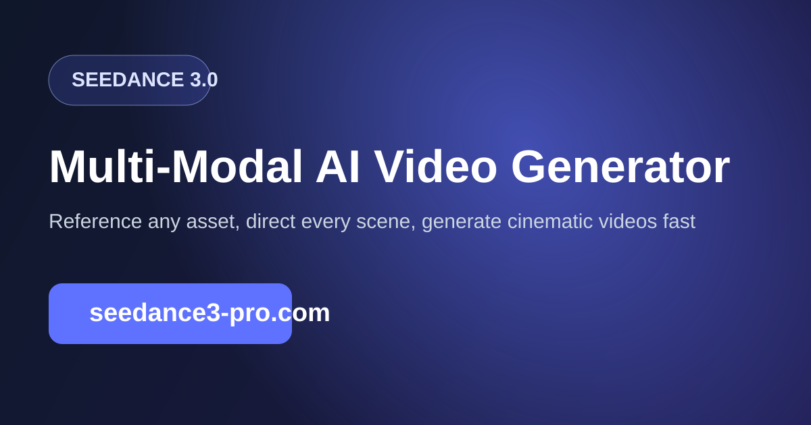

Model Comparison
Seedance vs Kling 3.0: Which model fits your workflow?
Both tools can generate strong visuals, but they differ in how creators control outputs at scale. This comparison focuses on real production behavior instead of one-off demo quality.

Prompt controllability
Seedance workflows emphasize multi-modal control through explicit references, making it easier to replicate campaign logic across multiple variants. Kling can deliver strong single outputs but may require different prompt phrasing to maintain consistency.
Reference transfer quality
For teams using camera references and style references together, Seedance-style mapping patterns often reduce drift. If your process depends on predictable reference reuse, this is a key decision factor.
Short-form ad production fit
For TikTok and Reels pipelines, controllable 9:16 prompt templates matter more than cinematic one-offs. Seedance templates built around hook-first structure can improve repeatability for media testing cycles.
Iteration speed and team ops
The winning model for teams is usually the one that supports clear iteration logs. If your team can quickly diagnose why a result changed, your creative velocity goes up. Seedance-oriented workflows are easier to standardize when everyone follows the same prompt template grammar.
Decision summary
Choose based on workflow objective: if you need strict repeatability and reference-driven production, Seedance-style pipelines are often stronger. If your priority is exploratory ideation with fewer operational constraints, compare both on your own benchmark prompts before committing.